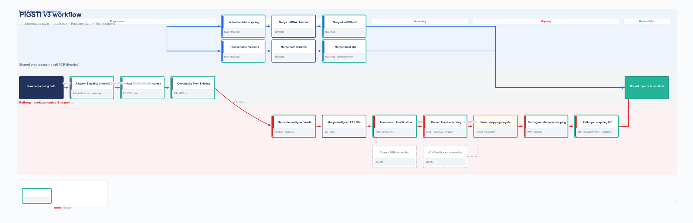

Static figure (matplotlib)
Regenerate with python scripts/render_workflow_diagram.py → PNG/SVG/Mermaid (docs/images/).

Interactive flow (full graph)
Dashed arrows: optional branches (damage screen, genetic sexing, decOM, HOPS). Solid: default path.
Required / default step
Optional · config-flag
Join / checkpoint
flowchart TB
subgraph SPINE[" "]
direction LR
RAW([/"Raw sequencing data
FASTQ · samples.tsv"/])
ADAPT["Adapter & quality trimming
AdapterRemoval · cutadapt"]
FQS["Host & contaminant screen
FastQ Screen · collapsed"]
PR["Filter & dedup
PRINSEQ++"]
RAW --> ADAPT --> FQS
ADAPT --> PR
end
subgraph HOST["Host & mtDNA"]
direction LR
HM["Host genome mapping
BWA / Bowtie2 · collapsed"]
DP["DamageProfiler
per PCR BAM"]
MT["Mitochondrial mapping
BWA / Bowtie2"]
MH{{"Merge host
samtools · results/host/"}}
SX["Genetic sexing
R residual · Cow/Goat/Sheep/Dog (opt)"]
MM{{"Merge mtDNA
samtools"}}
QH["Merged host QC
Qualimap · samples/"]
QM["Merged mtDNA QC
Qualimap · samples/"]
HM --> MH --> QH
HM -.-> DP
MH -.-> SX
MT --> MM --> QM
end
subgraph PATH["Pathogen & metagenomics"]
direction LR
CH["Unaligned reads
Bowtie2 · samtools · PRINSEQ-passed"]
MU{{"Merge FASTQs
cat · pigz · pools/"}}
KR["Classification
KrakenUniq"]
DC["decOM
(config)"]
HO["HOPS
(config)"]
EV["Kraken E-value scoring
dExp_Escore · evalue/"]
CK{{"Checkpoint
pathogen_targets"}}
PM["Reference mapping
BWA / Bowtie2"]
PQ["Mapping QC
ANI · DamageProfiler · Qualimap"]
CH --> MU --> KR
MU -.-> DC
KR -.-> HO
KR --> EV --> CK --> PM --> PQ
HO -.-> CK
end
FIN([/"Cohort deliverables
final/ · manifests · catalogs"/])
FQS --> HM
FQS --> MT
PR --> CH
QH --> FIN
QM --> FIN
PQ --> FIN
classDef input fill:#21325B,stroke:#21325B,color:#fff
classDef process fill:#fff,stroke:#24B498,stroke-width:2px,color:#21325B
classDef optional fill:#F8FAFC,stroke:#94A3B8,stroke-width:2px,stroke-dasharray:5 3,color:#21325B
classDef custom fill:#F6F7F8,stroke:#475569,stroke-width:2px,color:#21325B
classDef checkpoint fill:#FFFBF0,stroke:#D97706,stroke-width:2px,color:#21325B
classDef output fill:#24B498,stroke:#1A8A74,color:#fff
class RAW input
class ADAPT,FQS,PR,HM,MT,DP,QH,QM,CH,KR,EV,PM,PQ process
class MH,MM,MU,CK custom
class DC,HO,SX optional
class FIN output
Snakemake rule graph (--dag)
Requires Graphviz (dot) on PATH. Outputs docs/images/snakemake_dag.svg (many nodes at full cohort scale).
bash scripts/render_snakemake_dag.sh
Or manually (from repo root, after validation can build the DAG):
snakemake --snakefile Snakefile --configfile config/config.yaml --dag \ --use-conda --conda-prefix .snakemake/conda \ | dot -Tsvg -o docs/images/snakemake_dag.svg

Extras not shown on every edge
- Terminal soft-clip — 4 bp soft-clipping on merged host BAMs (
softclip_mod.py) after damage profiling. - PCR vs bio sample — merges and Kraken use biological
sample; most mapping is per PCR underresults/libraries/. - Index build —
check_and_build_indicesfor pathogen/host/mt refs before mapping. - Checkpoint — pathogen targets from cohort checkpoint; rules expand from
pathogen_targets.txt. - Optional modes —
pathogen_screening_only,pathogen_mapping_mode,results_root, see CONFIG.